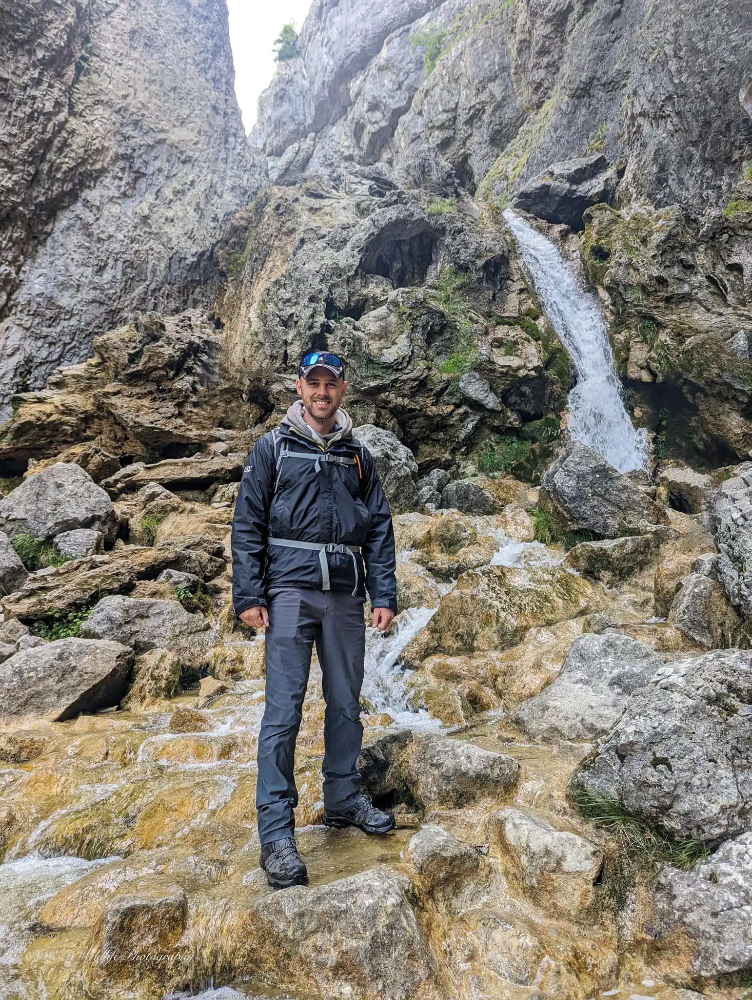
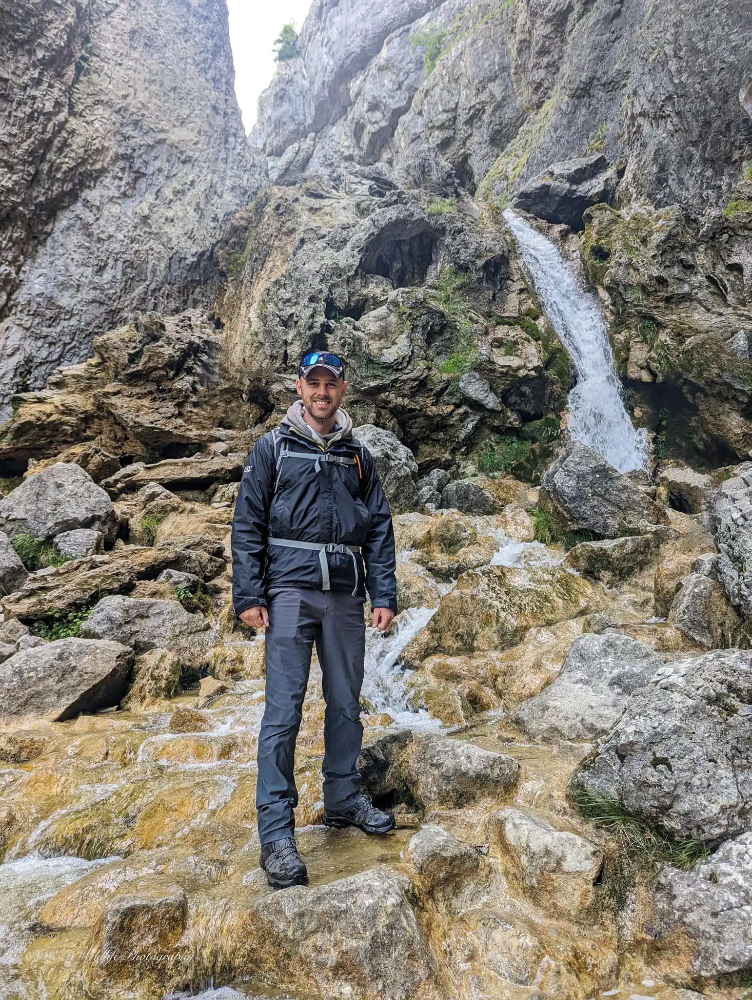
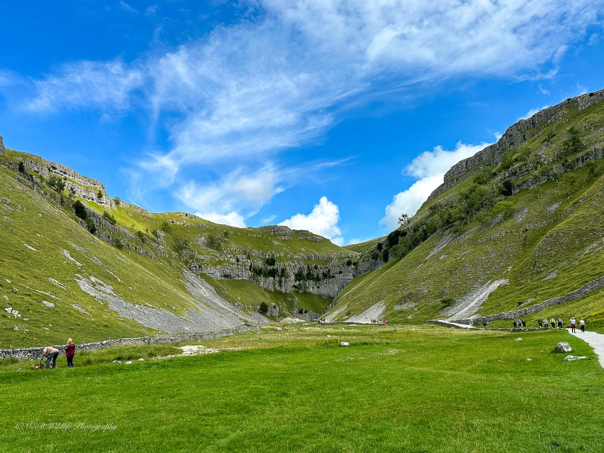
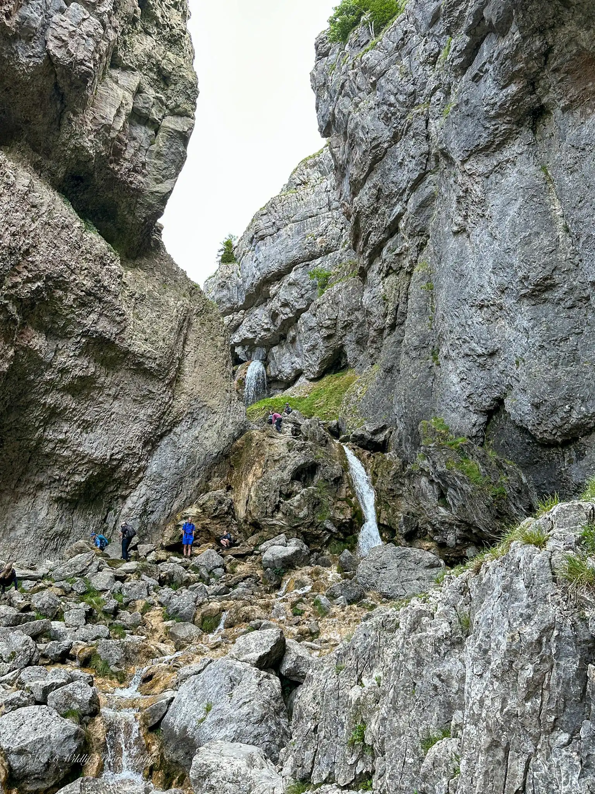
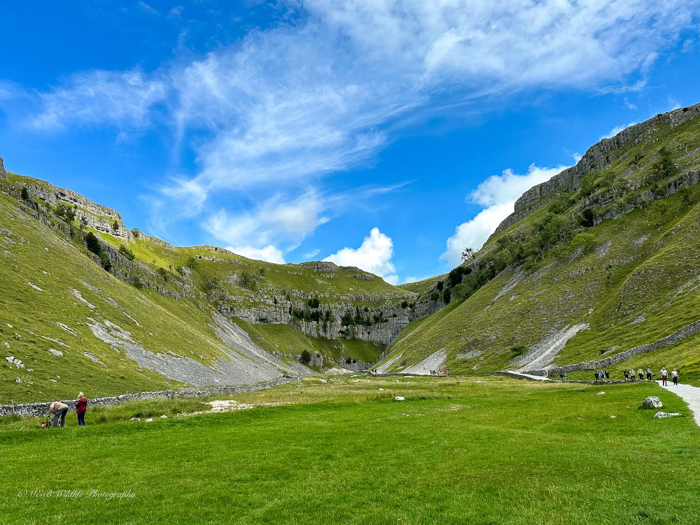
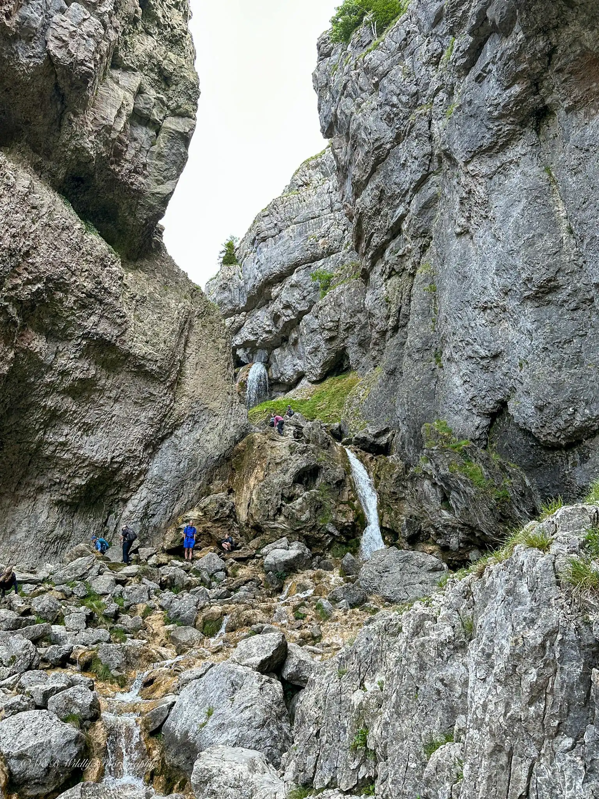
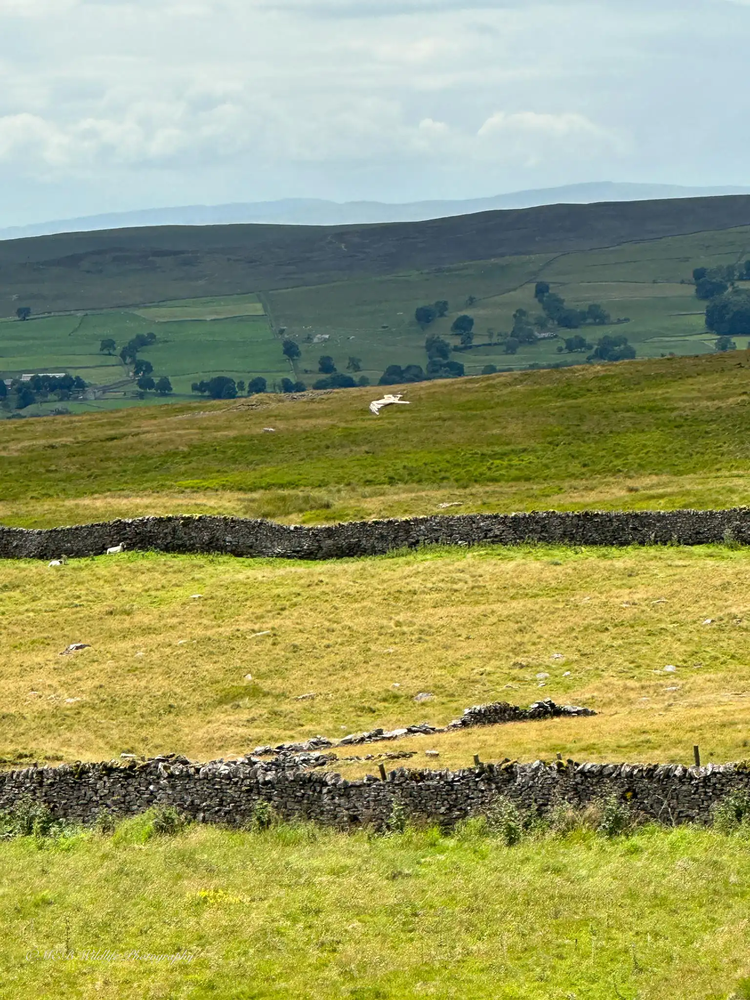
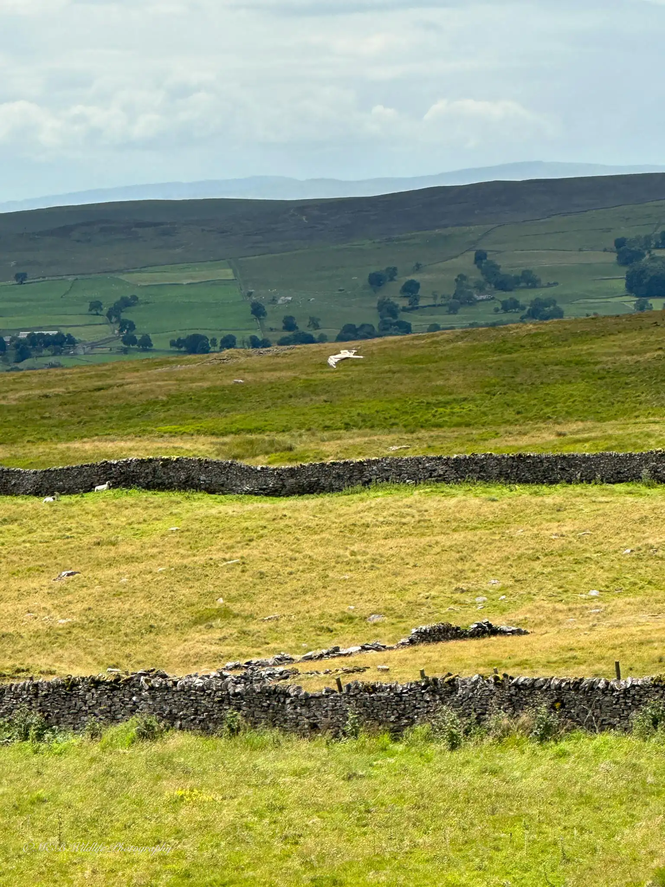

Here is a selection of photos I took during my visit to the Lake District when I was summiting and descenting Helvellyn.
Here is a selection of photos I took during my visit to the Lake District when I was summiting and descenting Helvellyn.


 

 





 



Copyright MEB wildlife Photography 2023